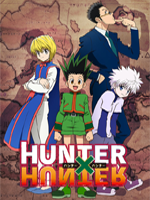

Hunter x Hunter
-

Hunter × Hunter (Japanese: ハンター×ハンター Hepburn: Hantā Hantā, abbreviated: HxH) is a Japanese manga series written and illustrated by Yoshihiro Togashi. It has been serialized in Weekly Shōnen Jump magazine and journal since March 3, 1998, although the manga has frequently gone on extended hiatuses since 2006. As of June 2017, 360 chapters have been collected into 34 volumes by Shueisha. The story focuses on a young boy named Gon Freecss, who discovers that his father, who he was told was dead, is actually alive and a world-renowned Hunter, a licensed profession for those who specialize in fantastic pursuits such as locating rare or unidentified animal species, treasure hunting, surveying unexplored enclaves, or hunting down lawless individuals. Despite being abandoned by his father, Gon departs upon a journey to follow in his footsteps, pass the rigorous Hunter Examination, and eventually find his father. Along the way, Gon meets various other Hunters and also encounters the paranormal. The original inspiration for the manga came from Togashi's own collecting hobby. In 1999, Hunter × Hunter was adapted into a 62-episode anime television series produced by Nippon Animation and directed by Kazuhiro Furuhashi. The show premiered on Japan's Fuji TV and ran until 2001. Three separate original video animations (OVAs) totaling 30 episodes were subsequently produced by Nippon Animation and released in Japan from 2002 to 2004. A second anime television series by Madhouse aired on Nippon Television from October 2011 to September 2014, with two animated theatrical films released in 2013. There are also numerous audio albums, video games, musicals, and other media based on Hunter × Hunter. The manga has been translated into English and released in North America by Viz Media since April 2005. Both television series were also licensed by Viz, with the first series having aired on the Funimation Channel in 2009 and the second series premiering on Adult Swim's Toonami block since April 16, 2016. Hunter × Hunter has been a huge critical and financial success and has become one of Shueisha's best-selling manga series, having sold 66 million copies in Japan alone as of 2014.